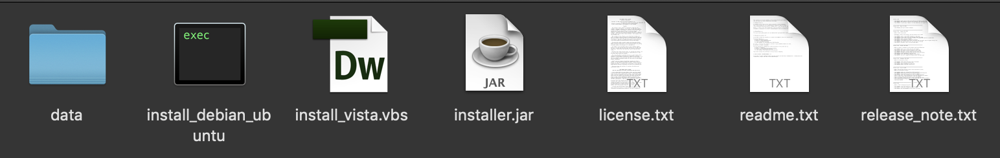
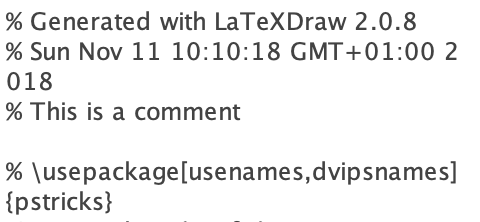
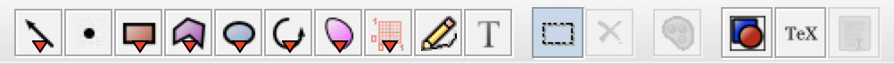
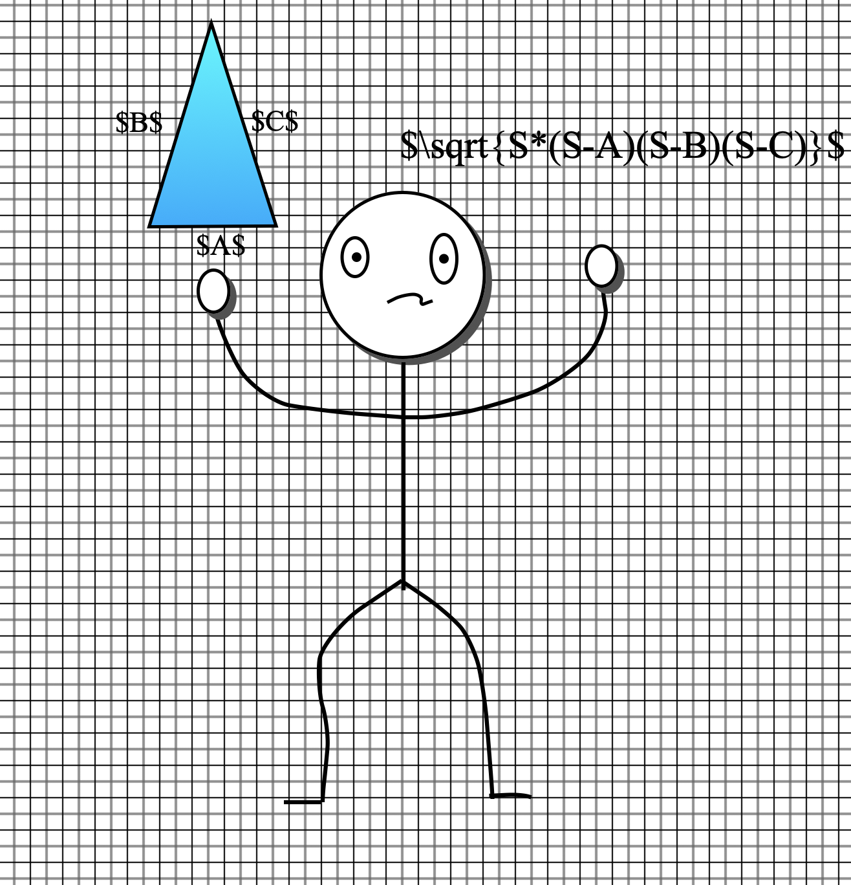
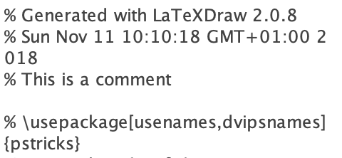
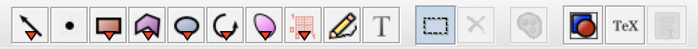
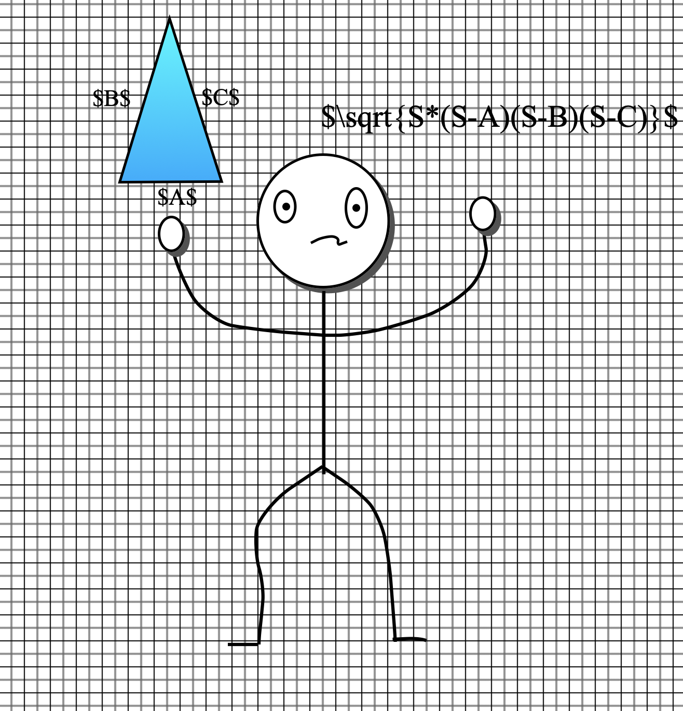

How to draw with latexdraw
Do you need to add figures or draws to your LaTeX document? The easiest way is by using latexdraw.
Vector tools allow users to include good graphics in LaTeX. LaTeXDraw is a free PDPTricks code. Since it is developed in JAVA it can be used
with any system.
How to install LaTeX Draw
You can find the program here.
Once you download it, open the installer.jar to install the program. The program will create a templates folder in /Users/Shared/latexdraw.

Time to draw
The first time you open the program, you will find yourself facing a vast grid. This grid is the interface where you can draw or place shapes.
The grid can be adjusted by clicking on the little grid button on the left side of the item bar.
You can add templates by clicking on Draw->Templates. This can help you understanding how the items works.
If you wish, you can add images or PSTricks code by clicking on Insert. The image will be added on the grid pattern. With Code you can add comments on the code, which will be added later on your .tex document.

You can select any shape by selecting one from the right side of the item bar, for example circles, rectangles, square, etc. If you wish to draw by hand, you can use the Freehand tool.
With the select tool you can select more than one element on the grid. Once you have selected them, if you right-click you will see a few options. You can rotate the figure, or group elements together.

You can color your shapes by changing the figure properties. Here you can add a fill color, or add gradients or shadows.
Lastly, if you want to add a text you can click on the add text icon. If you're going to write a formula, write it between $$.
Now try to make your draw in LaTeXDraw before going on!

If you wish, you can add images or PSTricks code by clicking on Insert. The image will be added on the grid pattern. With Code you can add comments on the code, which will be added later on your .tex document.

You can select any shape by selecting one from the right side of the item bar, for example circles, rectangles, square, etc. If you wish to draw by hand, you can use the Freehand tool.
With the select tool you can select more than one element on the grid. Once you have selected them, if you right-click you will see a few options. You can rotate the figure, or group elements together.

You can color your shapes by changing the figure properties. Here you can add a fill color, or add gradients or shadows.
Lastly, if you want to add a text you can click on the add text icon. If you're going to write a formula, write it between $$.
Now try to make your draw in LaTeXDraw before going on!

How to import your draw in LaTeX
When you're finished drawing on LaTeXDraw, export your document as PSPTricks in a .tex file.
To do so, click on File->Export as...->PSTricks code.
Now, create a new .tex file on LaTeX. Write the following code:
<...> is where you have to put your PSPTricks code that you just exported from LaTeXDraw.
DON'T try to run the code now, you'll encounter several errors and you will obtain a black box. Place the pspicture inside TeXtoEPS to have your PDF with the correct bounding box for the picture.
Now, create a new .tex file on LaTeX. Write the following code:
CODE
\documentclass{article}
\usepackage{pstricks}
\usepackage{pst-plot}
\usepackage{pst-eps}
\usepackage{pst-grad}
\pagestyle{empty}
\begin{document}
\begin{TeXtoEPS}
\begin{pspicture}
<...>
\end{pspicture}
\end{TeXtoEPS}
\end{document}
<...> is where you have to put your PSPTricks code that you just exported from LaTeXDraw.
DON'T try to run the code now, you'll encounter several errors and you will obtain a black box. Place the pspicture inside TeXtoEPS to have your PDF with the correct bounding box for the picture.
Export your draw
Open your terminal, go to the right folder and execute the following command on your shell:
latex myfigure.tex
dvips -E -q -o myfigure.eps myfigure.dvi
Now you can enjoy your draw!
latex myfigure.tex
dvips -E -q -o myfigure.eps myfigure.dvi
Now you can enjoy your draw!